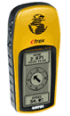
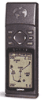

Настройка GPS для работы с российскими картами
Как настроить GPS на отображение координат в Pulkovo 1942
Российские карты создавались и создаются на математической основе отличной от основы используемой при создании картографических материалов других стран. В частности, российские карты используют в качестве основы систему координат 1942 года (СК-42 она же Pulkovo-1942), в определение которой входит эллипсоид Красовского.
Если вы по той или иной причине хотите, чтобы ваш приемник отображал координаты в этой системе координат (СК), вам нужно либо выбрать ее в списке поддерживаемых СК или задать вручную набор специальных параметров, описывающих как эта система соотносится с WGS84, в которой работает система GPS.
Система координат СК-42 в GPS приемники фирмы Garmin как правило не встроена, но ее можно прописать вручную, задав пользовательский набор параметров трансформации (User Datum). В этот набор, кроме параметров самого эллипсоида (разница в длине между большими полуосями - DA, разность сжатий - DF) входят еще относительные параметры положения его центра (DX, DY, DZ). Эти параметры задаются относительно общемировой системы координат WGS 84 (World Geodetic System 1984).
Такая настройка может пригодится в следующих случаях:
- По тем или иным причинам необходимо получить максимальную точность отображения координат на экране прибора. Разница между координатами одной и той же точки в разных системах координат составляет порядка 150 м (откуда взята эта цифра).
- Получаемые координаты с GPS вручную тут же переносятся на бумажную или электронную карту с известной системой координат отличной от WGS 84.
Важно помнить, что, независимо от того, какая система координат настроена в GPS, загрузка данных с него с помощью кабеля, будет все равно происходить в системе координат WGS 84. Таким образом, этих данные все равно придется пересчитывать в нужную систему координат.
1. Установка системы координат Pulkovo-1942 в GPS
| Garmin eTrex | Garmin 12 | ||
|---|---|---|---|
Страница Menu |
 |
Кнопка Page до страницы Main Menu |
 |
Далее нужно ввести следующие значения:
| Параметр | Значение | Округленное значение |
Описание |
|---|---|---|---|
DX |
23.92 |
+24 |
Смещение эллипсоида по оси X |
DY |
-141.27 |
-141 |
Смещение эллипсоида по оси Y |
DZ |
-80.9 |
-81 |
Смещение эллипсоида по оси Z |
DA |
-108 |
–108 |
Разница в длине между большими полуосями (а) эллипсоидов WGS-84-Красовского |
DF |
+0.004808 |
+0.004808 |
Масштабированная разность сжатий (f1-f2)*10000 |
*для ввода отрицательных значений введите минус
в первом знаке поля, пролистав 123456...; |
|||
При дальнейшей камеральной работе, использование карты в одной системе координат и данных GPS измерений в другой, ошибка может достигать достаточно больших величин. В большинстве случаев, рекомендуется избегать использования данных в разных системах координат одновременно.
На примере видна разница между точками в СК-42 (фиолетовые точки) и WGS 84 (красные) наложенных на топооснову масштаба 1:200000 находящуюся в СК-42. При таком использовании, точки в WGS-84 попадают в море. Точки в СК-42 получены с помощью GPS, настроенного используя вышеприведенные параметры (территория - Куршская Коса, побережье Балтийского моря).

Для скачивания и пересчета данных с GPS удобно использовать программу DNR Garmin, подробнее про настройку и работу с ней можно прочитать здесь.
С другими наборами параметров, с которыми вы можете столкнуться, можно ознакомиться в отдельной статье.
Ссылки по теме
Дата создания: 25.05.2002
Автор(ы): Максим Дубинин